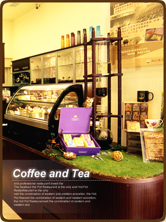

有着共同梦想，追求完美个性，将这些一一反映在餐饮上的一些好友，于2006年10月，创造出了一个别于一般咖啡店的小天地~~~阿伏得咖~~~
它是希腊的守护神，也是一种精神的象征。一种对餐饮的不妥协，店里有每道餐点都需耗时制作，非泡制，“求精不求量”，“好还要更好”适合不赶时间的您。在这个小平米的空间里，却有大大的用心，在座椅方面，换上了别于一般咖啡厅的订做沙发，相对的牺牲了空间，但，就是希望客人坐的舒适，吃的愉快，享受那边刻的宁静，放松一天紧绷的情绪。
饮品方面，分为意式咖啡、花草（果）茶系列，健康蔬果汁、特调系列、养生及冰沙系列。意式咖啡别于一般商业咖啡，重视咖啡粉的粹取时间，更讲究咖啡滤器跟把手间分离，就怕滤器温度太高伤了咖啡原有精华的风味。这里的咖啡不仅实在，且杯杯呈现给您不一样的视觉感受。
在餐点上，则是提供了口袋堡轻食，也就是俗称的热三明治，别看它小小一片，肉馅可都是精心搭配，有炸的，有炒的，配上套餐付送的水果沙拉，酸酸甜甜的滋味，让爱美又怕胖的女性朋友爱不释手。
阿尔罗得秉承对餐饮的热爱
不断求新，不断进步
只为追求更极致的味道
我们不是最好
但我们绝对用心
诚挚的欢迎您亲临指导